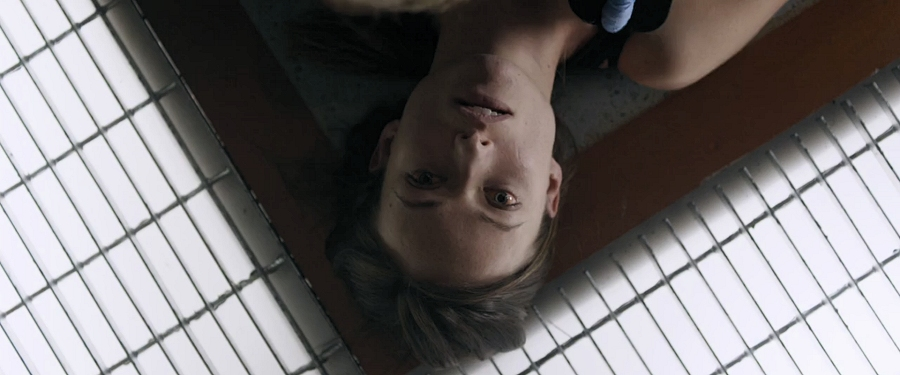
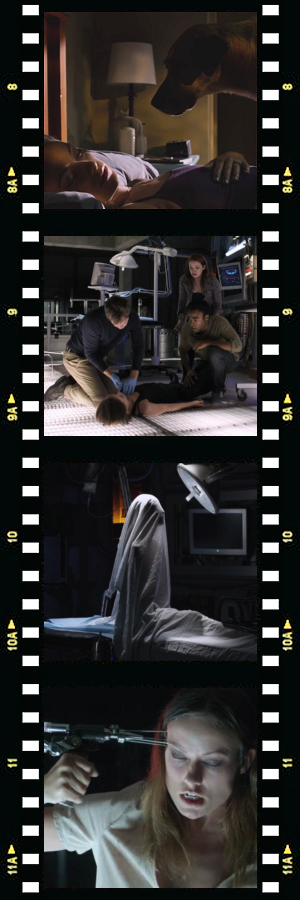

The Lazarus Effect is a low-budget sci-fi horror film written by Luke Dawson and Jeremy Slater, directed by David Gelb and produced by Blumhouse Productions, horror movie production company known for their Paranormal Activity, Insidious and Sinister franchises.
Medical researchers Frank (Mark Duplass) and his fiancee, Zoe (Olivia Wilde), have developed a serum, code-named ‘Lazarus’, that is intended to assist coma patients.
While running the first successful trial of the serum on a recently deceased dog with the assistance of their friends, Niko (Donald Glover), Clay (Evan Peters), and cameraman Eva (Sarah Bolger) who documents the progress of their experiment, they notice that the revived dog’s behaviour is markedly different to than when it was alive: its cataracts disappear, it loses its appetite, and is exhibiting other, rather peculiar traits. Scans of the dog’s cranium reveal that the serum, instead of dissipating, is constructing strange new synapses within the dog’s brain.
Alas, when the dean of the university learns about their unauthorised experiment, their project is shut down. To make the things worse, a major pharmaceutical corporation takes over the company that funded their research and attorneys acting on its behalf raid the premises and confiscate everything associated with the project.
Undeterred, during the night Frank and his team sneak back into the lab to replicate the experiment so that they can claim the invention of the serum as their own. Unfortunately, during this attempt things go horribly wrong when Zoe is fatally electrocuted. Desperate, Frank who is not willing to accept her death, uses the serum to bring Zoe back to life.
At first, the procedure appears to be a success, but the team soon realises that something is amiss with Zoe. When questioned about her experience, she claims that after she died, she went to her own, personalised version of Hell, over and over reliving the nightmare from her childhood when, during a fire in her apartment building, she saw her neighbours trapped in their flat burning to death.
Zoe also begins to demonstrate unusual psychic abilities such as telepathy and telekinesis.
As could be expected from a horror film, it doesn’t take too long and Niko, Clay and finally even Zoe’s boyfriend Frank are duly dispatched in suitably gruesome fashion. Zoe then injects herself with an entire bag of the Lazarus serum, enhancing her supernatural powers.
Using her super-charged paranormal abilities, Zoe then cuts off the power to the entire lab and sends Eva (who is still alive and is trying to locate Zoe in the dark to inject her with poison) into the same version of Hell that she went to after she has died. Inside the nightmare, it is revealed that it was in fact Zoe who started the fire in the building, thus causing the agonising death of her neighbours.
In the end, Zoe kills Eva too, but not before messing with her mind – making her think that it was in fact she who won over Zoe – and then injects Frank with her own blood saturated with the Lazarus serum, in an attempt to bring him back from the dead, presumably endowed with similar supernatural abilities as hers.
◈ ◈ ◈

In a scenario eerily reminiscent of the aforementioned sci-fi horror film,
Dr Sam Parnia, a real-life American heart specialist, whose new book on resuscitation science subtitled 'The Science that is Erasing the Boundaries Between Life and Death' even bears the same title – The Lazarus Effect, recently said that we will soon be able to bring the dead back to life.